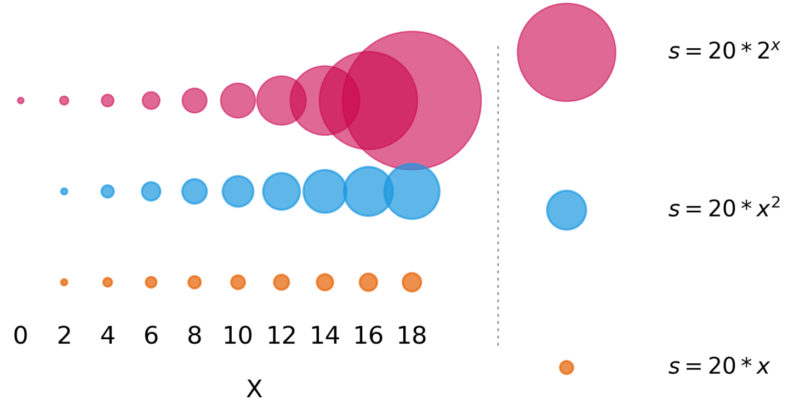

3. Encoding
When discussing data visualisation, data encoding essentially means how you translate the data into a visual element on a chart (Warnes, 2018). In her fantastic blog post, Sophie Warnes describes data encoding as a set of rules to follow, giving the following logic:
Every time , do
,
where the something visual is the encoding.
Starting simply, lets consider a scatter plot. We can think about how we might change a point marker to encode the data. There are many different ways we can encode data in this setting, including but not limited to: - Position - The x and y co-ordinates reflect the data - Colour - Colour can be used to represent a continuous numerical value (colour map) - Colour can be used to represent discrete or categorical data - Shape - Marker shape could be used to represent categorical data or highlight specific points - Size - Size could be used to represent a continuous numerical value or category
How many distinct values do you need to discriminate between? This can define the method of encoding that best suits your needs.
We're going to look at two main factors as we discuss encoding data:
1. Truthful and non-misleading graphics
2. Easy to read, efficient graphics
Take some time to read through the UCDavis DataLab Principles of Visual Perception section in their data visualisation workshop notes.
They highlight a number of ways we can be misled by graphics, and how we can leverage the way our brains absorb visual information to build better data visualisations. For example, see the figure below:

Caption: Which inner circle is bigger? From UCDavis Principles of data Visualisation workshop
1. Building truthful and non-misleading graphics
Refer to this useful graphic when trying to decide what encoding channel to use.
Using size as an encoding channel
Size is an attribute that is easy to set to map onto a numerical value, to provide a third dimension to your visualisation. However, there are a few issues with this approach.
1. We are not very good at estimating area
It's difficult to accurately estimate the area of a marker, making it difficult for readers to decode our visualisation. This is also why it's best to avoid pie-charts wherever possible.
2. It's not always clear or obvious the component of 'size' that maps onto the value, or how it scales
Different Python plotting libraries tie different marker attributes to the idea of 'size' - marker diameter, radius, and area. This means that different marker shapes masy scale differently for different packages.
Then depending on the scale of your data, you may have to use a multiple or factor to adjust the size relationship to make it visible in your plot. See below for the different effects this can have.

Caption: Size(s) in matplotlib library set as different mutliples of x value.
Implying order
Order can be implied by colour, size, position, angle (of marker). Ensure that you do not unintentionally imply that data are ordered when they are not. When listing data sets in the legend, if there is no scientific basis for ordering them in a specific way, alphabetise them, so as not to unintentionally apply a ranking. For example, country names should be alphabetised inside alphabetised continent headers.
Be mindful when selecting colours for your plots. It's good to keep in mind what colour might represent to your audience, and if this is what you intended. For example, when building a plot discussing political party results, the colours red and blue will have different meanings and interpretation depending on the country. Similarly, using a continuous colour map, or varying saturation and intensity can imply that the data is ordered, as in the above example.
Some things to keep in mind when picking a colour palette for your figure:
- Is the data ordered or not? Do you need to use a qualitative, sequential or diverging palette?
- How many levels need to be distinguishable?
- Will the plot be readable if you have a colour vision deficiency (i.e., colour blindness)?
- Will the plot be readable if printed in black and white?
- Is there enough contrast between the different colours that it will be legible on a range of different screens?
You can avail of tools such as ColorBrewer to pick a basic scientific palette. For more fine-grained control, try using Chroma.js or Colorgorical to generate palettes.
If you already have a palette in mind, test it out with the fantastic Viz Palette tool. This will allow you to export hex codes of colours to use in Python.
Further reading:
- Your Friendly Guide to Colors in Data Visualisation
- Best Color Palettes for Scientific Figures and Data Visualizations """
heatmaps_md = """ There is a wealth of information and research into choosing the best heatmap to illustrate your data.
Crameri et al. (2020) highlight some of the issues with using poorly designed heatmaps:
Zones of danger, such as the boundaries of a hurricane track or current virus spread, are often based on uneven colour gradients to accentuate their importance. [...] Decisions based on data being ‘unfairly’ represented could produce, for instance, a Martian rover being sent over terrain that is too steep as the topography was inaccurately visualised, or a medical worker making an incomplete or inaccurate diagnosis based on uneven colour gradients.
-
You can see in the examples above how the
springheatmap squashes details at the extremes of the data, so you lose information near the max and minimum values. -
While
jetallows us to see detail in the extremes of the data, it also produces artifacts due to jumps in lightness between colours. -
The
plasmacolourmap removes these jump artifacts, and allows us to see more in the extreme values thanspringdid. -
The
turbocolourmap has been designed as a replacement forjet, where "where perceptual uniformity is not critical, but one still wants a high contrast, smooth visualization of the underlying data". This allows maxima and minima to be clearly seen, and doesn't produce artifical large jumps in brightness.
See the matplotlib documentation on colour maps for examples.
Other heatmap tools for Python include "batlow": the Scientific colour map, seaborn colour maps, cmocean colour maps, the SciCoMap package and the related blog pot